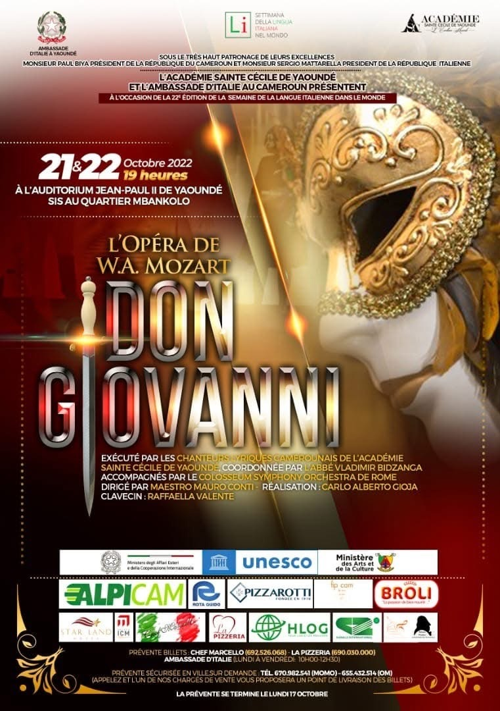
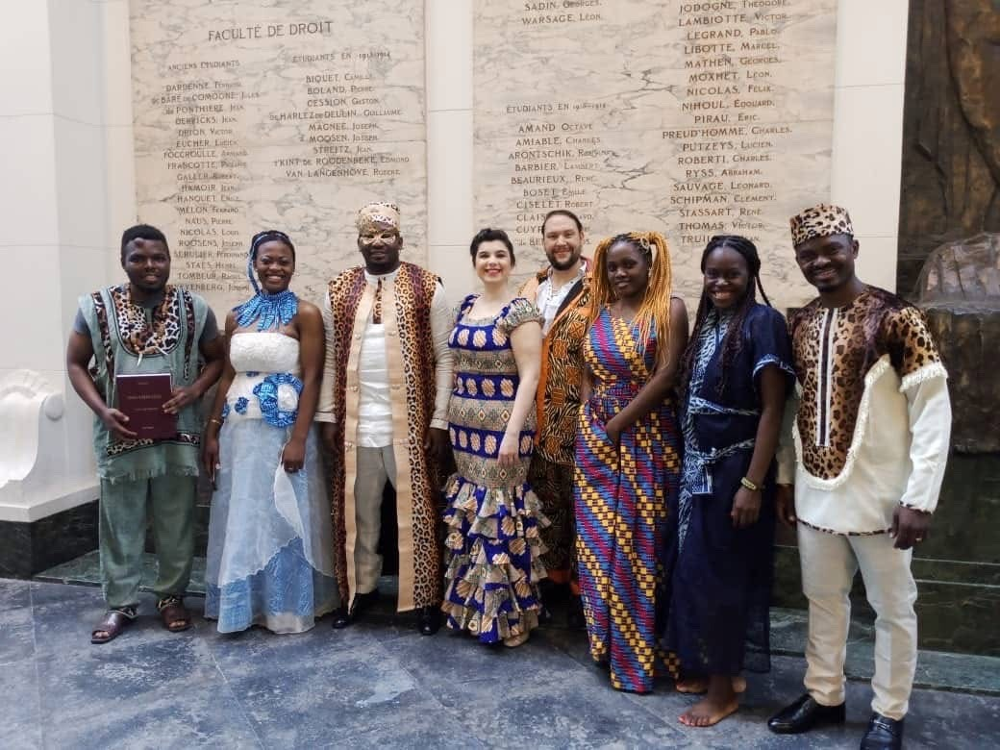
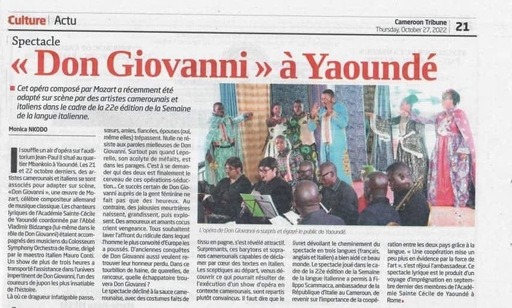

Regie d'opera in Italia e all'estero, con un approccio che unisce rigore filologico e sensibilità teatrale. Un progetto di diplomazia culturale italiana attraverso il teatro lirico nel mondo.
Produzione principale · Ottobre 2022

Settimana della Lingua Italiana nel Mondo — 22ª edizione
W. A. Mozart
Con il patrocinio di
Ministero degli Affari Esteri e della Cooperazione Internazionale
UNESCO
Ministero delle Arti e della Cultura del Camerun
Ambasciata d'Italia a Yaoundé
(Ambasciatore Filippo Scammacca del Murgo)


Rassegna stampa
Cameroon Tribune · 27 ottobre 2022
Il quotidiano nazionale camerunense Cameroon Tribune ha dedicato un ampio servizio alla produzione, sottolineando il successo dello spettacolo presso il pubblico dell'Auditorium Jean-Paul II e il valore culturale dell'iniziativa nel contesto della cooperazione italo-camerunense. La produzione è stata trasmessa integralmente da CRTV — Cameroon Radio Television.
Altre produzioni
Aprile 2018
La Cavalleria Rusticana — P. Mascagni
Sala Cento Passi · Rocca Colonna · Castelnuovo di Porto (Roma)
Orchestra I.O.S. Rome · Cori: I Cantori di Pietralata · VeioInCanto
Patrocinio: Comune di Castelnuovo di Porto
Sala Cento Passi · Rocca Colonna · Castelnuovo di Porto (Rome)
Orchestra I.O.S. Rome · Choirs: I Cantori di Pietralata · VeioInCanto